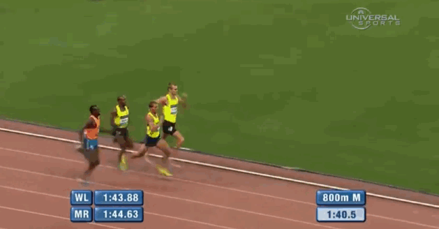

Sports
I run Cross Country in the summer and Track in the Winter and Spring.

For some reaon I am a lot better at Cross Country than I am at Track, because my times were comparitively much better in Cross Country. Long distance is my favorite kind of race because it is not very intense. In Cross Country we run 5 kilometers for races, and in track we normally run a mile. However, our practices require us to run much more than the distance of a race daily, in order to build strength and stamina. This causes us to finish as one of the best in the county. I don't watch any sports.